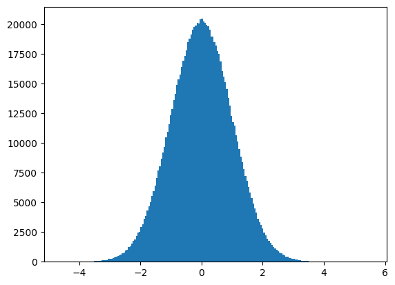

import numpy as np
# Figura 1Arreglos
Numpy es una librería fundamental para la computación científica con Python. Permite la creación y manipulación de arreglos (arrays) multidimensionales. Además, ofrece una amplia gama de funciones matemáticas y estadísticas.
Arreglo de una dimensión
data1=[1,2,3]
arr_1d=np.array(data1)
print(arr_1d) #Figura 2[1 2 3]Arreglo de dos dimensiones
data2=[[1,2],[3,4]]
arr_2d=np.array(data2)
print(arr_2d) #Figura 2[[1 2]
[3 4]]Arreglo de tres dimensiones
data3 = [[[1, 2, 3],[4, 5, 6],[7, 8, 9]],
[[1, 2, 3],[4, 5, 6],[7, 8, 9]],
[[1, 2, 3],[4, 5, 6],[7, 8, 9]]]
arr_3d = np.array(data3)
print(arr_3d) #Figura 3[[[1 2 3]
[4 5 6]
[7 8 9]]
[[1 2 3]
[4 5 6]
[7 8 9]]
[[1 2 3]
[4 5 6]
[7 8 9]]]Creación de arreglos
Funciones adicionales para crear un arreglo
# Arreglo cuyos valores son todos 0
a = np.zeros((2,3))
print(a)[[0. 0. 0.]
[0. 0. 0.]]# Arreglo cuyos valores son todos 1
b = np.ones((2,3,4))
print(b)[[[1. 1. 1. 1.]
[1. 1. 1. 1.]
[1. 1. 1. 1.]]
[[1. 1. 1. 1.]
[1. 1. 1. 1.]
[1. 1. 1. 1.]]]# Arreglo cuyos valores son todos "8", o cualquier otro valore indicado en el segundo parámentro
c = np.full((3,4),8)
print(c)[[8 8 8 8]
[8 8 8 8]
[8 8 8 8]]Creación de un arreglo básado en función de rangos
a=np.linspace(1,10,4) # (mínimo, máximo, no. de elementos)
print(a)[ 1. 4. 7. 10.]a2=np.arange(9)
print(a2)[0 1 2 3 4 5 6 7 8]a3=np.arange(1,11,2) # (mínimo, máximo, paso)
print(a3)[1 3 5 7 9]# Inicialización del arreglo con valores aleatorios
b=np.random.rand(2,3,2)
print(b)[[[0.58961366 0.7826446 ]
[0.51061397 0.38084648]
[0.94427869 0.45175176]]
[[0.20652389 0.49396422]
[0.63214339 0.22043267]
[0.8513416 0.89711989]]]# Inicialización del arreglo con valores aleatorios con una distribución normal
c=np.random.randn(2,3)
print(c)[[-0.35567627 0.73770074 0.75545374]
[ 0.75522022 0.04958392 0.90407643]]import matplotlib.pyplot as pltm=np.random.randn(1000000)
plt.hist(m,bins=200)
plt.show()
Características de un arreglo
En numpy (figura 3):
- Cada dimensión se denomina axis
- El número de dimensiones se denomina rank
- La lista de dimensiones con su correspondiente longitud se denomina shape
- El número total de elementos se denomina size
A = np.array([[1,2,3],[4,5,6],[7,8,9]])
print(A)[[1 2 3]
[4 5 6]
[7 8 9]]A[0][1]np.int64(2)A[1]array([4, 5, 6])A[1:3][1:3]array([[7, 8, 9]])A = np.array([[1,2],[3,4]])
B = np.array([[5,6],[7,8]])
print(A+B)[[ 6 8]
[10 12]]C = np.dot(A,B)
print(C)[[19 22]
[43 50]]D = A.T
print(D)[[1 3]
[2 4]]F=np.arange(1,10,1) # arreglo de una dimensión
print(F)[1 2 3 4 5 6 7 8 9]print(F[5])6print(F[2:5])[3 4 5]print(F[4:])[5 6 7 8 9]print(F[0::3])[1 4 7]Areglo multidemsional
data=[[1,2,3],[4,5,6],[7,8,9]]
arreglo_multi=np.array(data)
print(arreglo_multi)[[1 2 3]
[4 5 6]
[7 8 9]]print(arreglo_multi[0,2]) #figura 43print(arreglo_multi[2:])[[7 8 9]]print(arreglo_multi[1:,1:])[[5 6]
[8 9]]Modificación de un arreglo
arreglo1=np.arange(12)
print(arreglo1)[ 0 1 2 3 4 5 6 7 8 9 10 11]print("shape",arreglo1.shape)shape (12,)print("arreglo1: ", arreglo1)arreglo1: [ 0 1 2 3 4 5 6 7 8 9 10 11]arreglo1.shape=(4,3)
print("Shape: ", arreglo1.shape)Shape: (4, 3)print("Arreglo1:\n", arreglo1) # Devuelve un nuevo arreglo con los mismos datosArreglo1:
[[ 0 1 2]
[ 3 4 5]
[ 6 7 8]
[ 9 10 11]]arreglo2=arreglo1.reshape(3,4)
print("Shape:" , arreglo2.shape)Shape: (3, 4)print("Arreglo2: \n",arreglo2)Arreglo2:
[[ 0 1 2 3]
[ 4 5 6 7]
[ 8 9 10 11]]Modificaciones en un arreglo impactan en el precedente
arreglo2[0,1]=20print("Arreglo2: \n", arreglo2)Arreglo2:
[[ 0 20 2 3]
[ 4 5 6 7]
[ 8 9 10 11]]print("Arreglo1: \n", arreglo1)Arreglo1:
[[ 0 20 2]
[ 3 4 5]
[ 6 7 8]
[ 9 10 11]]Añadir y eliminar elementos de un arreglo
A = np.array([[1,2,3],[4,5,6],[7,8,9]])
print(A)[[1 2 3]
[4 5 6]
[7 8 9]]b=np.delete(A,1,axis=0)
print(b)[[1 2 3]
[7 8 9]]c=np.append(b,[[10,11,12]],axis=0)
print(c)[[ 1 2 3]
[ 7 8 9]
[10 11 12]]